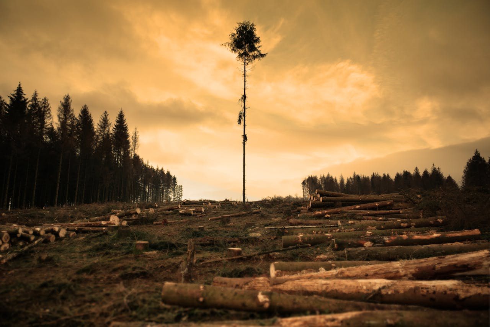
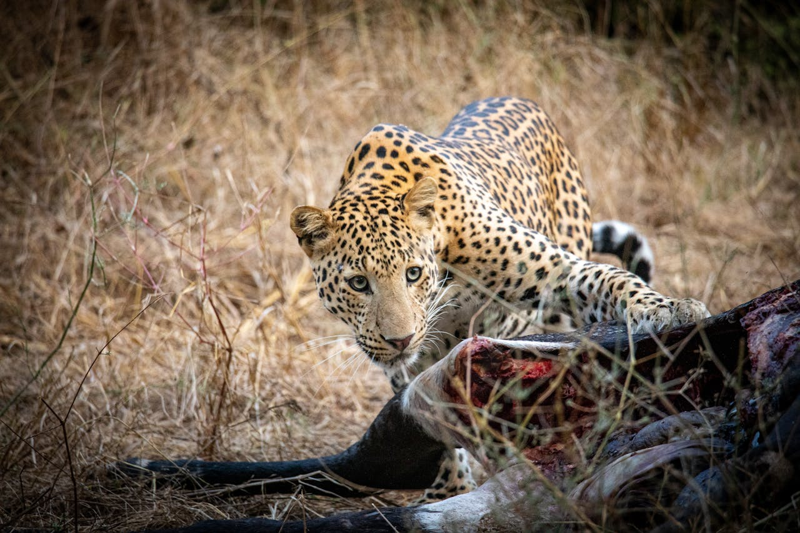
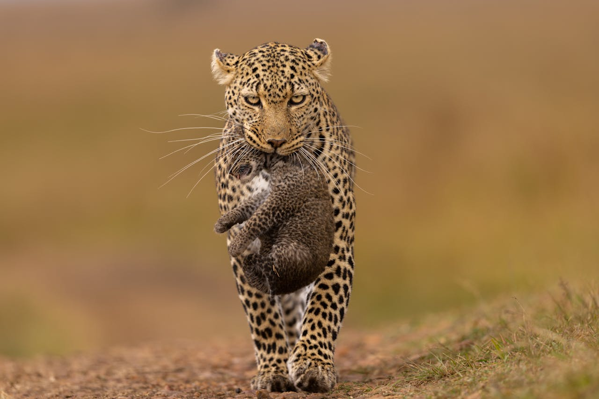
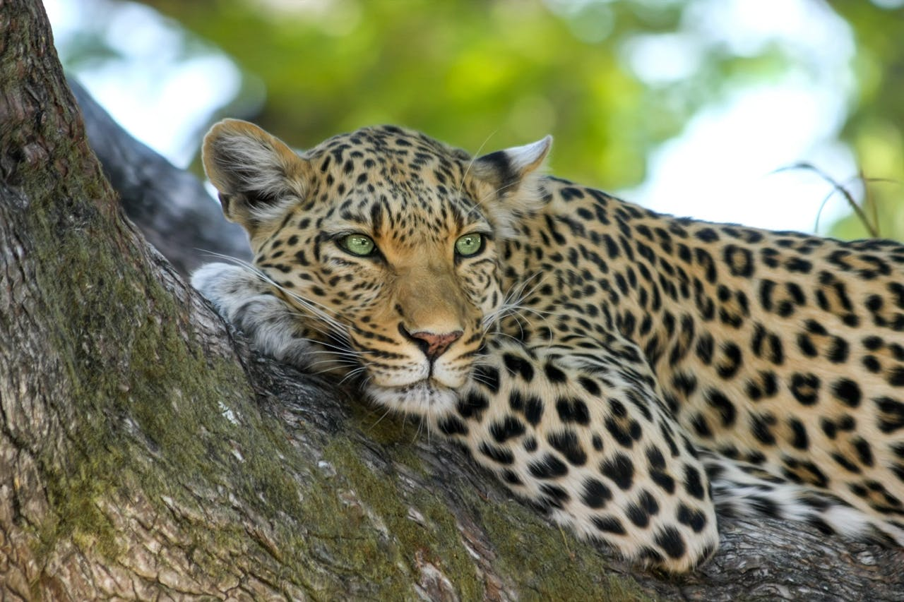

Threats to the Amur Leopard
Explore the six primary threats facing the Amur leopard today. Click each card to learn more.
Poaching
Habitat Loss
Prey Depletion

Climate Change
Inbreeding
Diseases
Poaching
Poaching remains the single greatest illegal threat to the survival of the Amur leopard. Each animal’s distinctive spotted coat and leopard bones command high prices—often several thousand dollars per pelt or kilogram—on the black market in parts of East Asia, where they are used in luxury fashion and traditional “medicinal” elixirs. Despite strong legal protections in both Russia and China, remote forest locations and limited patrol resources make enforcement extremely challenging.
Between 2003 and 2015, at least 15 Amur leopards were confirmed killed by poachers, representing over 10% of the global wild population at that time. Even a single loss can be devastating to this small, isolated group of fewer than 100 mature individuals. Poachers often lure animals into traps set for other big cats or ungulates; in many cases, leopards are shot on sight when encountered.
Conservation organizations have responded by funding anti-poaching patrols, installing motion-triggered cameras and snares that alert rangers, and working with local communities to provide economic alternatives to hunting. Since 2015, increased patrols in Russia’s Land of the Leopard National Park have driven down snaring incidents by over 60%. However, demand remains, and clandestine trading networks continue to evolve, meaning that sustained vigilance and cross-border cooperation are essential.
Public awareness campaigns aimed at discouraging the use of leopard products in traditional medicine—combined with stiffer penalties for wildlife traffickers—offer hope that poaching pressure can be further reduced. Until demand is curbed and enforcement strengthened, however, every individual Amur leopard remains at risk once it wanders beyond protected park boundaries.
Habitat Loss
Over the past several decades, the temperate forests of the Russian Far East and northeastern China have shrunk by nearly 30%, driven by unregulated logging, agricultural expansion, and the construction of roads and railways. This large-scale deforestation not only removes vital cover and denning sites for Amur leopards but also fragments the landscape into isolated patches, making it increasingly difficult for individuals to find mates, access prey, or recolonize empty territories.
Research shows that viable Amur leopard populations require at least 1,500–2,000 km² of contiguous forest to maintain genetic diversity and support natural prey densities. Yet today, many remaining forest blocks fall well below that threshold. Fragmentation has forced leopards into marginal sub-habitats—often closer to human settlements—where conflict with people and livestock depredation risks rise sharply.
Habitat corridors have been identified as a key solution: protected “stepping-stone” reserves and underpass tunnels beneath highways can reconnect isolated forest patches. In recent years, conservation groups and government agencies have partnered to plant over 12,000 hectares of fast-growing native tree species and to retrofit logging roads with wildlife overpasses. Early monitoring indicates these corridors are already being used by leopards, tigers, and their prey.
However, enforcement remains uneven. Illegal selective logging persists in buffer zones, and new infrastructure projects often proceed without adequate wildlife impact assessments. Long-term recovery will depend on strengthening land-use planning, expanding park boundaries, and securing sustainable funding for reforestation and patrol teams. Only by restoring connectivity at a landscape scale can we ensure Amur leopards retain the vast, unbroken forests they need to thrive.
Prey Depletion
Historically, Amur leopards relied on abundant populations of deer (Sika and Roe), wild boar, and small ungulates to sustain themselves. However, intensive poaching of these prey species for meat, hides, and traditional medicine has driven their numbers down by over 40% in many parts of the leopard’s range over the last two decades.
With fewer wild prey available, leopards must expand their hunting grounds—sometimes by more than 30%—to find sufficient food. This not only increases their energy expenditure but also brings them into closer contact with livestock pens, heightening the risk of conflict and retaliatory killings by farmers protecting their herds.
Studies in China’s Jilin Province show that where wild boar densities fell below 3 individuals per square kilometer, Amur leopard kill rates shifted by 60% toward cattle and sheep. Such dietary shifts can rapidly erode local tolerance for big cats and undermine conservation gains made through protected area management.
To counteract prey depletion, conservationists are working with local communities to implement “game management zones” where regulated seasonal hunting ensures sustainable quotas, and protected wildlife stocks can recover. Supplemental feeding programs—providing carcasses of animals lost to natural causes—have also been trialed, resulting in a 25% reduction in livestock depredation incidents in pilot areas.
Long-term solutions include restoring the ecological balance of forest ecosystems through anti-poaching patrols for ungulates, rewilding programs to reintroduce locally extirpated herbivores, and habitat improvement projects that enhance food availability (e.g., planting fruit-bearing shrubs to support small mammals). By rebuilding a robust wild prey base, we can help Amur leopards remain true apex predators in their native forests.
Climate Change
The Amur region has warmed by nearly 2 °C over the past 50 years—twice the global average—while winter precipitation has declined by up to 15%. These shifts are altering the composition and structure of the leopard’s forest habitat, leading to reduced undergrowth cover and changes in the distribution of key prey species like deer and boar.
Longer, warmer autumns and earlier thaws disrupt the timing of prey migrations and breeding cycles. For example, musk deer fawns are now born several weeks earlier than they were three decades ago, misaligned with peak food availability. Leopards encountering fewer young ungulates at optimal hunting times must hunt more frequently and across wider areas, increasing energetic stress.
In addition, more frequent extreme weather—heavy rains in summer and rapid freeze–thaw cycles in winter—degrades den sites. Flooded burrows and unstable ice cover make it harder for females to safely raise cubs, contributing to lower juvenile survival rates. Studies suggest cub mortality can spike by up to 25% in years with unseasonably warm winters followed by late cold snaps.
Conservationists are mapping climate refugia—areas projected to experience the least change—to prioritize them for strict protection. Assisted habitat restoration, such as planting native shrubs and stabilizing streambanks, helps maintain dense understory cover. Cross-border cooperation between Russia and China is also expanding to ensure corridors remain intact as shifting climates force leopards to move.
While climate change cannot be halted at the local scale, these targeted interventions can buffer its worst impacts—helping the Amur leopard maintain resilient populations in a rapidly changing world.
Inbreeding
With fewer than 100 mature individuals in the wild, the Amur leopard population has passed through a severe genetic bottleneck. This isolation—caused by habitat fragmentation and low overall numbers—means closely related animals are increasingly forced to mate, reducing the gene pool available to the next generation.
Genetic studies have documented alarmingly low heterozygosity levels (genetic diversity) in Amur leopards: less than 15% of what is typical for other leopard subspecies. Such reduction manifests as inbreeding depression—fewer viable offspring, higher rates of birth defects, and weakened immune responses to disease. One field survey found that nearly 30% of cubs in certain forest patches failed to survive beyond six months, a rate double that seen in healthier populations.
Loss of genetic diversity also impairs the species’ ability to adapt to new stressors—whether emerging pathogens or subtle shifts in habitat conditions. For a top predator already struggling with external threats like poaching and habitat loss, inbreeding further limits long-term resilience.
To combat these risks, conservationists are exploring “genetic rescue” through carefully managed translocations. Russia’s wildlife authorities and Chinese partners have begun trial transfers of a handful of captive-bred Amur leopards—with the goal of introducing fresh bloodlines into small wild subpopulations. Early genetic monitoring shows slight but measurable increases in heterozygosity where these translocated animals have settled.
Maintaining connectivity corridors remains essential so that naturally dispersing individuals can continue to move between forest blocks, mate, and spread their genes. Coupling these landscape-scale efforts with continued protection against poaching and habitat encroachment offers the best chance to reverse inbreeding’s downward spiral and secure a genetically healthy future for the world’s rarest big cat.
Disease & Parasites
The small, isolated populations of Amur leopards are exceptionally vulnerable to infectious diseases. Canine distemper virus (CDV) and feline leukemia virus (FeLV) have both been detected in the region, often introduced by infected domestic dogs and cats living near forest edges. A single outbreak can wipe out 20–30% of a population within months, as leopards have little to no prior immunity.
Parasites such as Toxoplasma gondii and various tick-borne pathogens also pose hidden threats. Studies show that up to 40% of leopards tested carried at least one parasite species, which can weaken individuals, lower reproductive success, and make them more susceptible to secondary infections. When combined with nutritional stress from prey depletion, even mild infections can become life-threatening.
Monitoring and rapid response are critical. Conservation teams have established a health surveillance program that uses non-invasive scat and saliva sampling to test for viral and parasitic agents. In 2018, an early-warning alert system detected a spike in CDV antibodies in local wildlife, prompting a targeted vaccination campaign for nearby village dogs. That intervention is credited with preventing what could have been the first major distemper outbreak in over a decade.
Longer-term strategies include continuing vaccination of domestic animals around protected areas, strict enforcement against dumping livestock carcasses (which can harbor pathogens), and even researching oral vaccination baits for leopards themselves. By integrating disease ecology into broader conservation planning—alongside habitat protection and anti-poaching efforts—there’s hope we can keep these hidden biological threats from tipping this fragile subspecies over the edge.